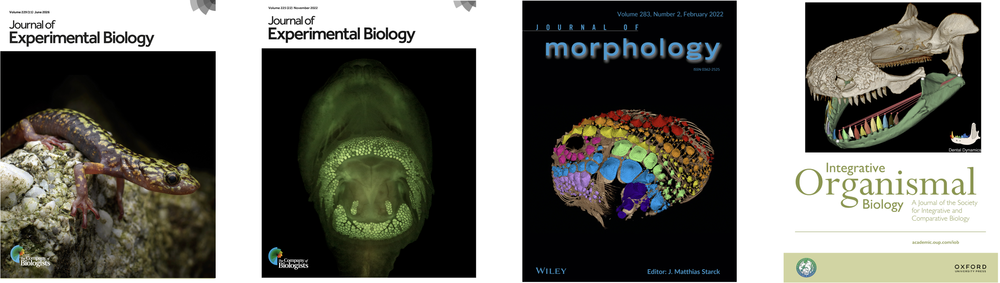

Peer-Reviewed Publications
(U = undergraduate student; * = Co-first authorship)
In Progress
[in review]. Poulin E, Kolmann MA, Stiassny MLJ, Cohen KE, Huie JM, Chabain J, Martinez CM. Stingray spine diversity reflects performance trade-offs linked to puncture and breakability.
2026
Huie JM, Kawano SM. Limb kinematics and morphology increase salamander climbing performance. Journal of Experimental Biology, 229(11), jeb251894 doi.org/10.1242/jeb.251894 Supplementals Data & Code Videos
Wagner M, Resl P, Klar N, Huie JM, Biasta I, McCarthy S, Smith M, Durbin R, Koblmüller S, Svardal H. The genomics of convergent adaptation to intertidal gravel beaches in Mediterranean clingfishes. Supplementals
Huie JM, Pryon RA, Kawano SM. Functional trade-offs and complex life cycles promote morphological diversity in salamander limb bones. Journal of Anatomy, 00, 1-14. doi.org/10.1111/joa.70115 Supplementals Data & Code
Evans AJ, Egan JP, Huie JM, Hernandez LP. 2026. Comparative anatomy of otomorphan epibranchial organs. The Anatomical Record, 309(1), 82-104. doi.org/10.1002/ar.25663
2025
Huie JM, Park GU, Kawano SM. 2025. Ecomorphology of climbing salamanders reveals a new suite of adaptations. Proceedings of the Royal Society B: Biological Sciences, 292(2053): 20251295. doi.org/10.1098/rspb.2025.1295 Supplementals Data & Code
Arnette SD, Donatelli CM, Rosen, J, Hawkins OH, Huie JM. 2025. Clinging for shear life: active input improves adhesion in the northern clingfish. Integrative and Comparative Biology, 65(6): 1724-1735. doi.org/10.1093/icb/icaf120
Huie JM, Arnette SD, Evans AJ, Cohen KE, Buser TJ, Crawford CC, Kane EA, Kolmann MA. 2025. Behavioral novelties and morphological exaptation underlie trophic novelty in an anemone-feeding fish. Journal of Zoology. doi.org/10.1111/jzo.70041 Data & Code Supporting Videos
Carr EM, Martin RP, Thurman MM, Cohen KE, Huie JM, Gruber DF, Sparks JS. 2025. Repeated and widespread evolution of biofluorescence in marine fishes. Nature Communications, 16(1), 1-10. doi.org/10.1038/s41467-025-59843-7
Crawford CH, Yadav S, Huie JM, Kane EA. 2025. Stop, chomp, and roll: rotational feeding behavior in marine sculpins. Northwestern Naturalist, 105(1), 54-58. doi.org/10.1898/NWN23-11
2024
Kawano SM, Martin J, Medina J, Doherty C, Zheng G, Hsiao E, Evans MJ, de Queiroz K, Pyron RA, Huie JM, Lima R, Langan EM, Peters A, Irschick DJ. 2024. Applying 3D models of giant salamanders to explore form-function relationships in early digit-bearing tetrapods.Integrative and Comparative Biology, 64(3): 715-728. doi.org/10.1093/icb/icae129
Cohen KE, Fitzpatrick ARU, Huie JM. 2024. Dental Dynamics: A fast new tool for quantifying tooth and jaw biomechanics in 3D Slicer. Integrative Organismal Biology, 6(1): obae015. doi.org/10.1093/iob/obae015 Supplementals
de Queiroz K, Huie JM, Hammel JU, Müller P, Baranov P. 2024. A new fossil Anolis lizard in Hispaniolan amber: ecomorphology and systematics. Journal of Herpetology, 58(1), 1-8. doi.org/10.1670/23-058
2023
Hoover RC, Hawkins OH, Rosen J, Wilson CD, Crawford CH, Holst M, Huie JM, Summers AP, Donatelli CM, Cohen KE. 2023. It pays to be bumpy: drag reducing armor in the Pacific spiny lumpsucker, Eumicrotremus orbis. Integrative and Comparative Biology, 63(3): 796-807. doi.org/10.1093/icb/icad076
Heiple ZU, Huie JM, Medeiros APM, Hart PB, Goatley CHR, Arcila D, Miller EC. 2023. Many ways to build an angler: diversity of feeding morphologies in a deep-sea evolutionary radiation. Biology Letters, 19, 20230049. doi.org/10.1098/rsbl.2023.0049 Supplementals
de Queiroz K, Huie JM, Langan EM. 2023. No longer in doubt: Discovery of a second specimen corroborates the validity of Anolis incredulus Garrido and Moreno 1998 (Reptilia, Iguania). Zootaxa, 5284(1), 121-141. doi.org/10.11646/zootaxa.5284.1.4
2022
Huie JM*, Wainwright DK*, Summers AP, Cohen KE. 2022. Sticky, stickier, and stickiest - a comparison of adhesive performance in clingfish, lumpsuckers, and snailfish. Journal of Experimental Biology, 225(22), jeb244821. doi.org/10.1242/jeb.244821 Data & Code
Brodnick OB*, Hansen CE*, Huie JM, Brandl SJ, Worsaae K. 2022. Functional impact and trophic morphology of small, sand-sifting fishes on coral reefs. Functional Ecology, 36, 1936-1948. doi.org/10.1111/1365-2435.14087 Data
Huie JM, Summers AP. 2022. The effects of soft and rough substrates on suction-based adhesion. Journal of Experimental Biology, 225(9), jeb243773. doi.org/10.1242/jeb.243773 Data & Code
Huie JM, Summers AP, Kawano SM. 2022. SegmentGeometry: a tool for measuring second moment of area in 3D Slicer. Integrative Organismal Biology, 4(1): 1-10. doi.org/10.1093/iob/obac009 Data
Woodruff ECU, Huie JM, Summers AP, Cohen KE. 2022. Pacific Spiny Lumpsucker armor - development, damage, and defense in the intertidal. Journal of Morphology, 283(2), 164-173. doi.org/10.1002/jmor.21435 Data
2021
Huie JM, Prates I, Bell RC, de Queiroz K. 2021. Convergent patterns of adaptive radiation between island and mainland Anolis lizards. Biological Journal of the Linnean Society, 134(1), 95-110. doi.org/10.1093/biolinnean/blab072 Data & Code
2020
Huie JM, Thacker CE, Tornabene L. 2020. Co-evolution of cleaning and feeding morphology in western Atlantic and eastern Pacific gobies. Evolution, 74(2), 419-433. doi.org/10.1111/evo.13904 Data & Code
2019
George MN, Andino J, Huie JM, Carrington E. 2019. Microscale pH and dissolved oxygen fluctuations within mussel aggregations and their implications for mussel attachment and raft aquaculture. Journal of Shellfish Research, 38(3), 795-809. doi.org/10.2983/035.038.0329
Huie JM, Summers AP, and Kolmann MA. 2019. Body shape separates guilds of rheophilic herbivores (Myleinae: Serrasalmidae) better than feeding morphology. Proceedings of the Academy of Natural Sciences of Philadelphia, 166(1), 1-15. doi.org/10.1635/053.166.0116
2018
Kolmann MA, Huie JM, Evans K, and Summers AP. 2018. Specialized specialists and the narrow niche fallacy: a tale of scale-feeding fishes. Royal Society open science, 5(1), 171581. doi.org/10.1098/rsos.171581 Data & Code